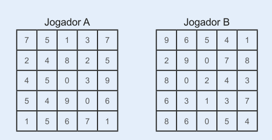

UNIDADE 4 - Divisibilidade
Introdução à unidade
Nesta unidade, são aborda- dos os critérios de divisibilidade, múltiplos, números primos e divisores, estabelecendo uma relação com a história da Matemática e fazendo uso de jogos como uma estratégia metodológica.
A seguir, relacionamos os objetivos que se pretende atingir ao estudar os conceitos desta unidade.
Capítulo 1 – O que são diviso- res e múltiplos
Objetivos:
► Conhecer os critérios de divisibilidade percebendo-os como facilitadores do processo de identificação dos divisores.
► Identificar os divisores de um número natural.
► Identificar os múltiplos de um número natural.
► Reconhecer o múltiplo de um número como o resultado do produto entre dois números naturais.
► Resolver situações-proble- ma aplicando o conceito de divisores e múltiplos.
Capítulo 2 – Números primos
► Reconhecer as condições necessárias para que um número seja considerado primo.
► Expressar um número por meio da decomposição em fatores primos.
► Escrever um número natural na forma fatorada.

Westerpark. Amsterdã, Holanda, 2020.
Orientações específicas
Na abertura da unidade, apresentamos uma situação-problema que envolve a prática de esportes como a corrida. Promova uma discussão sobre a importância da prática de esportes e de uma alimentação saudável, para preservar a saúde.
Para resolver a situação proposta na abertura, os alunos poderão ser divididos em duplas ou trios para que discutam e façam a apresentação de formas de solucionar o problema. Neste caso, os corredores passarão pelo ponto inicial da pista depois de 60 minutos. Os alunos poderão fazer esquemas para mostrar como chegaram a essa resposta.
132
Capítulo 3 – Máximo divisor comum (mdc)
Objetivos:
► Reconhecer o máximo divisor comum (mdc) entre dois ou mais números naturais como o maior di- visor possível entre esses números.
► Calcular o mdc de dois ou mais números naturais, por meio da decomposição em fatores primos e pela determinação dos divisores comuns desses números.
► Resolver situações-problema que envolvam o conceito de mdc.
Capítulo 4 – Mínimo múltiplo comum (mmc)
Objetivos:
► Reconhecer o mínimo múltiplo comum (mmc) entre dois ou mais números naturais como o menor múltiplo possível, diferente de zero, entre esses números.
► Calcular o mmc de dois ou mais números naturais por meio da decomposição simultânea em fatores primos e pela determinação dos múltiplos comuns desses números.
► Resolver situações-problema que envolvam o conceito de mmc.
Praticar esportes é muito importante para a saúde. A corrida, por exemplo, é um exercício aeróbico que ajuda a controlar o peso. Ela ajuda na queima de calorias e aumenta a taxa metabólica. O controle do peso desempenha um papel fundamental na prevenção do diabetes tipo 2, doença na qual os açúcares dos alimentos não são adequadamente metabolizados. Essa doença vem aumentando em todo o mundo, principalmente em países sob rápida industrialização.
Lucas e Joaquim, preocupados com a saúde, correm várias voltas em um parque perto de suas casas três vezes por semana. Lucas é mais rápido que Joaquim e dá uma volta na pista em 15 minutos, ao passo que Joaquim leva 20 minutos para percorrer a mesma distância.
CONVERSE
1. Se os dois começarem a correr no mesmo instante, saindo do ponto de partida, depois de quanto tempo eles passarão juntos pelo ponto inicial da pista?
2. Como vocês resolveram a questão anterior?
Então, os 2 vão se encontrar novamente depois de 60 minutos. Lucas estará na 4.ª volta e Joaquim, na 3.ª volta. Discuta com os alunos as possibilidades de respostas para o problema proposto. Incentive-os a fazer desenhos ou esquemas para visualizar a resposta. Verifique se eles sabem o significado da resposta encontrada, ou seja, que o tempo mínimo de 60 minutos representa o menor múltiplo comum entre 15 e 20 e que 60 é um número divisível por 15 e 20 ao mesmo tempo.
133
Neste capítulo, são explo- rados os conceitos relacionados aos divisores de um número natural e são apresentados os critérios de divisibilidade. É importante que os alunos percebam que os critérios de divisibilidade podem facilitar e agilizar determinados cálculos. Eles nos auxiliam a verificar quando um número é ou não divisível por outro. Ao conhecer esses critérios, podemos realizar verificações mentalmente sem que haja necessidade de efetuar uma divisão ou multiplicação.
Outro conceito apresentado é o de múltiplos de um número natural. Esse conceito nos permite realizar cálculos envolvendo números fracionários mais facilmente.
Divisores de um número natural
Inicialmente, é proposta uma situação para que os alunos discutam formas de como calcular a quantidade de salgadinhos e docinhos que cada um irá receber. Após esta discussão, você poderá explicar aos alunos que, sabendo-se que 25 pessoas estarão no aniversário, podemos dividir o número de do- cinhos e de cada tipo de salgadinho pelo número total de participantes. Veja:
150 : 25 = 6
60 : 25 = 2 e o resto é igual a 10.
Quando a divisão é exata, dizemos que um número é divisível por outro. Nesse caso, dizemos que 150 é divisível por 25 ou ainda que 25 é divisor de 150. Podemos verificar que 60 não é divisível por 25, pois a divisão não é exata. Portanto, na festa de aniversário de Luciana, cada pessoa receberá 2 salgadinhos de cada tipo e 6 brigadeiros, sobrando 10 salgadinhos de cada tipo.
Na segunda situação proposta, solicite aos alunos que verifiquem, com o auxílio de uma calculadora, regularidades em
CAPÍTULO 1 - Divisores e múltiplos
Divisores de um número natural
Luciana resolveu comemorar seu aniversário com os colegas da escola. Para esse lanche, sua mãe vai levar, além de um bolo, 150 brigadeiros, 60 coxinhas e 60 pasteizinhos. Participarão do lanche: Luciana, sua mãe, a professora e os 22 colegas da classe.


1. Troque ideias com seus colegas e professor e calcule, em seu caderno, quantos salgadinhos de cada tipo e quantos docinhos cada um dos presentes receberá se forem divididos em quantidades iguais. Sobrarão docinhos ou salgadinhos?
Dizemos que um número natural é divisível por outro quando sua divisão é exata. Observe:

Nesse caso, temos que 186 é divisível por 2, ou ainda, que 2 é divisor de 186.
Podemos encontrar outros divisores do número 186, veja:
1, 2, 3, 6, 31, 62, 93, 186

2. Observe os números a seguir.
230 345 447 234 372 440 500 684
a) Com o auxílio de uma calculadora e a ajuda de seus colegas,
verifiquem quais dos números acima são divisíveis por:
2 3 4 5 6 8 9 10
b) O que os números que são divisíveis por 2 têm em comum?
c) O que os números que são divisíveis por 5 têm em comum?
d) O que os números que são divisíveis por 6 têm em comum?
134
algumas divisões. Após trabalhar a situação proposta no livro didático, proponha a eles, por exemplo, alguns números pares e ímpares, como 232, 233, 234, 235, 236, 237, 238, 239, 240, e peça-lhes que façam a divisão desses números por 2. Quando terminarem, pergunte-lhes:
► Todas as divisões realizadas foram exatas?
► O que você percebeu em relação aos números que foram possíveis dividir por 2?
Os alunos deverão perceber que, em todos os números propostos, somente os números terminados em 0, 2, 4, 6 e 8 são divisíveis por 2. Solicite-lhes que anotem, no caderno, as conclusões a que chegaram.
Escolha outros números previamente e solicite-lhes que façam essa investigação em duplas ou grupos para instigar a troca de ideias. O mesmo trabalho pode ser feito para verificar quais números são divisíveis por 3, 4, 5, 6, 8 e 9.
A investigação de quais números são divisíveis ou não é um ótimo momento para se utilizar a calculadora para desenvolver o conceito de divisibilidade.
Com relação à situação apresentada no livro didático, veja quais são os números que são divisíveis por 2, 3, 4, 5, 6, 8, 9 e 10. Outros números podem ser acrescentados a esses números a seu critério.
Divisíveis por 2: 230, 234, 372, 440, 500, 684.
Divisíveis por 3: 345, 447, 234, 372, 684.
Divisíveis por 4: 372, 440, 500, 684.
Divisíveis por 5: 230, 345, 440, 500.
684. Divisíveis por 6: 234, 372,
Divisíveis por 8: 440.
Divisíveis por 9: 234, 684.
Divisíveis por 10: 230, 440, 500.
Critérios de divisibilidade

Divisibilidade por 2
Observe as divisões a seguir.

Os números 82 e 84 são divisíveis por 2, pois as divisões são exatas. Já em relação ao número 83, a divisão por 2 não é exata.
Um número natural é divisível por 2 quando ele é par, ou seja, quando termina em 0, 2, 4, 6 ou 8.
Divisibilidade por 3
Observe as divisões a seguir.
Os números 93, 120 e 261 são divisíveis por 3.
93 → 9 + 3 = 12
120 → 1 + 2 + 0 = 3
261 → 2 + 6 + 1 = 9

Observe que, nos três casos em que o resto é zero, a soma dos algarismos de cada número é um número divisível por 3. Esses três exemplos verificam o seguinte critério:
Um número natural é divisível por 3 quando a soma de seus algarismos dá um número divisível por 3.
135
Critérios de divisibilidade
O jogo a seguir explora os conceitos de divisores, os critérios de divisibilidade e o cálculo mental. Sugere-se aplicá-lo após o estudo dos critérios de divisibilidade.
Divisores em linha
Para esse jogo, serão necessários dois tabuleiros, dois dados, 15 marcadores e uma folha de registro das jogadas com espaço para seis jogadas.
Para iniciar o jogo, deverão ser formadas duplas e cada jogador receberá um tabuleiro com uma folha para registro, conforme modelo.
Cada jogador, alternadamente, lança os dados e escreve um número de dois algarismos, sendo que o algarismo das dezenas corresponde à pontuação do primeiro dado lançado, e o algarismo das unidades, à pontuação do segundo dado lançado.
Em seguida, o jogador coloca um marcador sobre um dos números do seu tabuleiro que seja divisor do número que obteve no lançamento dos dados. O número obtido deve ser anotado na folha de registro, na posição correspondente ao divisor marcado no tabuleiro. Veja um exemplo de folha de registro preenchida.
Nesse caso, a folha de registro mostra que no 1.º jogo saiu o número 36 e que o jogador A colocou seu marcador
Divisibilidade por 4
Observe as divisões a seguir.
Todos os números acima são divisíveis por 4.
Um número natural é divisível por 4 quando termina em 00 ou quando os dois últimos algarismos, da direita para a esquerda, formam um número divisível por 4.
Divisibilidade por 5
Observe as divisões a seguir.

Todos os números acima são divisíveis por 5. Observe que todos terminam em 0 ou 5.
Um número natural é divisível por 5 quando termina em 0 ou 5.
136
sobre o número 9 (que é divisor de 36), e o jogador B marcou o 4 (que é divisor de 24). Se um jogador colocar seu marcador em uma das casas do tabuleiro com um número que não é divisor do número obtido nos dados, ele perde a vez de jogar. Se não houver possibilidade de marcar um número divisor do número obtido nos dados porque todos já estão marcados, o jogador passa sua vez. Ganha o jogo quem primeiro conseguir colocar, em seu tabuleiro, quatro de seus marcadores em linha horizontal, vertical ou diagonal.
STOCCO, Kátia Smole et al. Jogos de Matemática de 6.º a 9.º ano. Porto Alegre: Artmed, 2007. p. 23-25. (Adaptado).
Divisibilidade por 6
Observe os números abaixo.
Esses números são divisíveis por 2 e por 3.
A seguir, temos as divisões desses números por 6.

Todos os números também são divisíveis por 6.
Um número natural é divisível por 6 quando é divisível por 2 e 3 ao mesmo tempo.
Divisibilidade por 8
Observe as divisões a seguir.
Todos os números acima são divisíveis por 8. Note que os três últimos algarismos, da direita para a esquerda, de cada número terminam em 000 ou formam números divisíveis por 8.
Um número natural é divisível por 8 quando termina em 000 ou quando os três últimos algarismos, da direita para a esquerda, formam um número divisível por 8.
137
Divisibilidade por 9
Os critérios de divisibilidade nos auxiliam a identificar quando um número é divisível por outro sem a necessidade de realizar cálculos extensos. Os números apresentados são exemplos de números que são ou não divisíveis por 9. Porém é importante comentar com os alunos que os números mostrados não são suficientes para provar os critérios de divisibilidade mostrados. Em Matemática, há necessidade de realizar uma demonstração algébrica para comprovar a validade de um critério.
No caso de um número ser divisível por 9, por exemplo, existe uma demonstração que prova que quando a soma dos algarismos de um número é divisível por 9, então, este número será divisível por 9.
Incentive os alunos a realizarem o cálculo da soma dos algarismos mentalmente.
Divisibilidade por 9
Observe as divisões a seguir.

Os números 99, 468 e 8 973 são divisíveis por 9.
Reinaldo Rosa/Acervo da Editora
99 → 9 + 9 = 18
468 → 4 + 6 + 8 = 18
8 973 → 8 + 9 + 7 + 3 = 27
Observe que, nos três casos, a soma dos algarismos de cada número é um número divisível por 9.
Um número natural é divisível por 9 quando a soma de seus algarismos é um número divisível por 9.
138
No trabalho com divisibilidade, em especial, na atividade 1 para que os alunos descrevam os critérios de divisibilidade de 100 e de 1000 proporciona aos estudantes o desenvolvimento de uma atitude investigativa, estimulando, também, o desenvolvimento do raciocínio lógico, conforme descreve a Competência específica de Matemática 2.
Divisibilidade por 10
Observe as divisões a seguir.

Todos os números acima são divisíveis por 10.
Um número natural é divisível por 10 quando termina em 0.
Divisibilidade por 100 e por 1 000
1. Elabore, em seu caderno, um critério de divisibilidade por 100 e outro critério para a divisibilidade por 1 000.
ENCONTRE SOLUÇÕES
1. Em seu caderno, escreva cinco divisores de cada um dos números abaixo.
a) 45 1, 3, 5, 9 e 15.
b) 36 1, 2, 3, 4 e 6.
c) 64 1, 2, 4, 8 e 16.
d) 56 1, 2, 7, 8 e 28.
2. Observe os números a seguir.
663
745
1 214
1 850
2 502
a) Quais desses números são divisíveis por 2? 1 214, 1 850 e 2 502.
b) Quais são divisíveis por 3? 663 e 2 502.
c) Quais são divisíveis por 5? 745 e 1 850.
d) Existe algum número divisível por 6? Qual? Sim; 2 502.
3. Qual é o maior número de dois algarismos que é divisível por:
a) 2? 98
b) 3? 99
c) 5? 95
d) 6? 96
4. Responda às questões a seguir, justificando a resposta dada.
a) O número 3 789 é divisível por 2? Não, pois não é um número par.
b) O número 1 632 é divisível por 3? Sim, pois a soma dos seus algarismos é um número divisível por 3: 1 + 6 + 3 + 2 = 12.
c) O número 1 500 é divisível por 4? Sim, pois termina em 00.
d) O número 62 048 é divisível por 8? Sim, pois os 3 últimos algarismos, da direita para a esquerda, formam um número divisível por 8.
139
Encontre soluções
Atividade 6
Como o número da casa de Carlos é formado por três algarismos iguais, as possibilidades são: 111, 222, 333, 444, 555, 666, 777, 888 e 999. Para que o número seja divisível por 6, precisa ser divisível por 2 e 3 ao mesmo tempo. Nesse caso, os números 111, 333, 555, 777, 999 não são divisíveis por 2, pois não são pares. Logo, estão excluídos. Dentre os números que sobraram, o único divisível por 8 é 888.
Atividade 7
Para que um número seja divisível por 6, ele precisa ser divisível por 2 e 3 ao mesmo tempo. Como o último algarismo do número é 4, então o número é par. Qualquer algarismo colocado no lugar de x fará com que o número seja divisível por 2. Porém, para ser divisível por 3, a soma de seus algarismos deve ser também um número divisível por 3; logo, os algarismos devem ser 2, 5 ou 8.
5. No caderno, escreva a sequência dos 10. Os Jogos Olímpicos de Londres foram divisores dos seguintes números:
a) 20 1, 2, 4, 5, 10, 20
b) 27 1, 3, 9, 27
c) 63 1, 3, 7, 9, 21, 63
d) 80 1, 2, 4, 5, 8, 10, 16, 20, 40, 80
► Qual o maior divisor comum entre 27 e 63? 9
► Qual o maior divisor comum entre 20 e 80? 20
6. O número da casa de Carlos é formado por três algarismos iguais e é divisível, ao mesmo tempo, por 6 e 8. Qual é o número da casa dele? 888
7. Que algarismos podem ser colocados no lugar de X, para que esse número seja divisível por 6? 2, 5 ou 8.

8. Qual é o menor número de quatro algarismos divisível por:
a) 2? 1000
d) 6? 1002
b) 3? 1000
e) 8? 1002
c) 5? 1000
f) 9? 1008
9. Um ano é bissexto quando o número que o representa é divisível por 4. No caso dos anos que terminam em 00, só se eles também forem divisíveis por 400. O ano de 2020 foi bissexto. Nesse caso, o mês de fevereiro teve 29 dias, como mostra o calendário a seguir.

► Verifique se os anos abaixo foram bissextos.
a) 1600 Sim.
b) 1732 Sim.
c) 1800 Não.
d) 2004 Sim.
10. Os Jogos Olímpicos de Londres foram realizados no ano de 2012, reunindo 191 países e 13 territórios participantes.
a) Esse ano foi bissexto? Sim
b) De quantos em quantos anos são realizados os Jogos Olímpicos? A cada 4 anos
c) Podemos dizer que os Jogos Olímpicos vêm coincidindo com os anos bissextos? Sim, com exceção da Olimpíada de Tóquio.
11. Uma forma prática de mostrar se um número é divisível por outro é por meio de um fluxograma. Um fluxograma é um esquema que representa o caminho necessário para chegar a uma conclusão. Observe o fluxograma a seguir que nos mostra se um número é par ou não.
► Com um colega, escolham um número natural e, em seus cadernos, usando o fluxograma, verifiquem se o número é ou não par. Resposta pessoal.
12. Observe o fluxograma a seguir
► Esse fluxograma representa qual critério de divisibilidade? Resposta pessoal.
13. Em seu caderno, elabore um fluxograma que represente quando um número natural é ou não divisível por 3.
Atividade 13
140
Múltiplos de um número natural
Marcelo vai iniciar uma pesquisa para um trabalho da escola. Ele deverá plantar uma flor e acompanhar seu crescimento. Para isso, deverá medi-la de 4 em 4 dias, até o 40.º dia, e anotar em um quadro a altura da planta no momento de cada medição.

Observe o quadro que ele construiu.
Os números dessa sequência representam os dias de medição e são múltiplos de 4.
Observe a sequência de alguns números naturais que são múltiplos de 4:
0, 4, 8, 12, 16, 20, 24, 28, 32, 36, 40, 44, 48, 52, ...
Para determinar os múltiplos de um número natural, multiplicamos-o pela sucessão dos números naturais.
A sequência dos múltiplos de um número natural é infinita.
Exemplos:
► 35 é múltiplo de 5 ou 35 é divisível por 5.
► 70 é múltiplo de 7 ou 70 é divisível por 7.
ENCONTRE SOLUÇÕES
1. Qual a sequência dos sete primeiros múltiplos de cada um dos números a seguir?
a) 2 0, 2, 4, 6, 8, 10, 12
b) 6 0, 6, 12, 18, 24, 30, 36
c) 3 0, 3, 6, 9, 12, 15, 18
d) 10 0, 10, 20, 30, 40, 50, 60
e) 5 0, 5, 10, 15, 20, 25, 30
f) 12 0, 12, 24, 36, 48, 60, 72
2. Em seu caderno, escreva:
a) o maior múltiplo de 5 formado por três algarismos; 995
b) o menor múltiplo de 4 formado por três algarismos; 100
c) o menor múltiplo de 6 entre 200 e 300; 204
d) o maior múltiplo de 9 entre 500 e 600. 594
141
Encontre soluções
Atividade 4
a) Grupo A: 2, 4, 8, 10, 14, 16, 20, 22, 26, 28, 32 e 34.
Grupo B: 3, 6, 9, 12, 15, 18, 21, 24, 27, 30, 33 e 36.
Grupo C: 1, 5, 7, 11, 13, 17, 19, 23, 25, 29, 31 e 35.
Atividade 5
a) Divisores próprios de 124:
1, 2, 4, 31 e 62; soma: 100.
Divisores próprios de 146:
1, 2 e 73; soma: 76.
Portanto, 124 e 146 não são números amigos.
Divisores próprios de 220:
1, 2, 4, 5, 10, 11, 20, 22, 44, 55 e 110; soma: 284.
Divisores próprios de 284:
1, 2, 4, 71 e 142; soma: 220. Portanto, 220 e 284 são números amigos.
b) Divisores próprios de 28: 1, 2, 4, 7 e 14; soma: 28. 28 é um número perfeito.
Divisores próprios de 36: 1, 2, 3, 4, 6, 9, 12 e 18; soma: 55.
36 não é um número perfeito.
Estimule os alunos a excluirem, com base nos critérios de divisibilidade, alguns divisores mentalmente. Para os demais, oriente-os a utilizar a calculadora para auxiliar no processo de verificação.
Proponha aos alunos outros pares de números para verificar se são números amigos, como 2 620 e 2 924, 5 020 e 5 564, 6 368 e 6 232 (todos os pares são números amigos). Para complementar, solicite aos alunos que pesquisem outros pares de números amigos.
Para os números perfeitos, proponha-lhes que verifiquem se os números 496 e 8 128 são perfeitos e solicite a eles também que pesquisem outros números perfeitos.
Como atividade complementar, solicite-lhes uma pesquisa sobre Pitágoras e a filosofia da escola pitagórica.
3. Qual o menor múltiplo comum, diferente de 0 (zero), entre:
a) 12 e 18? 36
b) 10 e 15? 30
c) 11 e 44? 44
4. Para realizar um trabalho, a professora de História dividiu a turma, que tem 36 alunos, em três grupos, de acordo com os seguintes critérios:
► o grupo A foi formado pelos números pares da lista de chamada, porém que não fossem múltiplos de 3;
► o grupo B foi formado pelos números múltiplos de 3;
► o grupo C foi formado pelos demais números da lista de chamada.
a) Que números da lista de chamada ficaram em cada grupo?
b) Com quantos alunos cada grupo ficou? 12 alunos.
5. Leia o texto a seguir.

Por volta de 540 a.C., o filósofo grego Pitágoras fundou, na cidade de Crotona, localizada ao sul da península italiana, uma escola voltada ao estudo da Filosofia, das Ciências Naturais e da Matemática. Muitos de seus discípulos se reuniram nessa escola, que acabou se tornando uma sociedade secreta.
Os pitagóricos, como eram chamados, espalharam pelo antigo mundo grego o interesse pelo estudo da Matemática. É atribuído a eles o início do desenvolvimento da Teoria dos Números. Eles descobriram os chamados números amigos e números perfeitos.
Um par de números é chamado de números amigos se cada um deles é igual à soma dos divisores próprios do outro. Os divisores próprios de um número natural maior que 0 (zero) são todos os divisores naturais desse números, exceto o próprio, por exemplo: 1 184 e 1 210 são amigos, pois os divisores próprios de 1 184 são 1, 2, 4, 8, 16, 32, 37, 74, 148, 296 e 592, cuja soma é igual a 1 210, e os divisores próprios de 1 210 são 1, 2, 5, 10, 11, 22, 55, 110, 121, 242 e 605, cuja soma é 1 184.
São chamados perfeitos os números cuja soma de seus divisores próprios é igual a eles. Por exemplo, a soma dos divisores próprios de 6 (1, 2 e 3) é ele mesmo.
a) Com o auxílio de uma calculadora, verifiquem se os pares de números a seguir são amigos.
124 e 146
220 e 284
b) Agora, verifiquem se os números a seguir são perfeitos.
36
28
De acordo com Garbi (2006, p. 25), os pitagóricos consideravam Deus o grande Geômetra do Universo; diziam que o mundo era feito de números e nutriam por eles uma veneração verdadeiramente religiosa. Essa visão pitagórica, em relação à Matemática, é até os dias de hoje um tema de grande debate entre os filósofos, que procuram responder à milenar pergunta: “Fazemos ou descobrimos a matemática?” Ainda de acordo com esse autor, outra notável contribuição dos pitagóricos à história da civilização foi a de terem espalhado pelo antigo mundo grego uma verdadeira “epidemia” de interesse pelo estudo da Matemática: em poucas décadas, após a criação da escola em Crotona, centros análogos foram surgindo em várias outras cidades e conquistando o coração das pessoas que nada tinham a ganhar materialmente com a Matemática, mas que a ela se dedicavam intensamente.
142
Atividade 6
Neste jogo proposto, os alunos poderão verificar se compreenderam o conceito de múltiplos, além de exercitar o raciocínio e o cálculo mental.
Os jogos são recursos importantes durante o processo de ensino-aprendizagem, pois permitem que os alunos possam expor as suas ideias, criar estratégias, aprender a respeitar regras e o outro. É um momento que oportuniza o desenvolvimento das competências gerais 4, 5 e 9 da BNCC, levando os alunos a expressar-se; partilhar informações, ideias e sentimentos, formular, negociar e defender ideias; fazer-se respeitar e promover o respeito ao outro.
6. Vamos descobrir múltiplos? Construa, em seu caderno, um quadro com os números de 0 a 99, como mostra o modelo.

► Convide um colega para jogar, obedecendo às regras descritas a seguir (Clique aqui para visualizar as regras).
1. Cada jogador deverá escolher uma cor de lápis para pintar os números e múltiplos que encontrar.
2. O jogador que iniciar o jogo deverá selecionar um número do quadro, pintando-o com a cor que escolheu.
3. O outro jogador deverá encontrar a maior quantidade possível de múltiplos do número selecionado, pintando-os com a cor que escolheu.
4. Quando o jogador terminar de pintar, deverá então escolher um número para que o outro jogador encontre os múltiplos.
5. O jogo terminará quando todos os números forem pintados, lembran-do que um número só pode ser pintado uma vez, mesmo que seja múltiplo de outro número também.
6. Caso um jogador pinte um número que não seja múltiplo, este deverá ser assinalado, para que, no final, não seja considerado na pontuação.
7. Vencerá o jogo quem tiver mais números pintados.
Reinaldo Rosa/Acervo da Editora
143